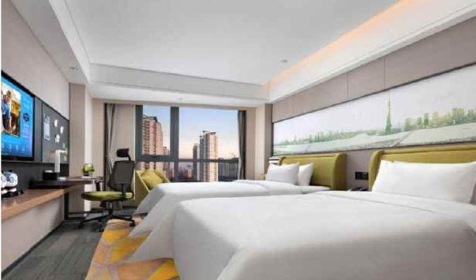

KANGNAM UNIVERSITY · GLOBAL PLUS
2026 WINTER PROGRAM
글로벌플러스
(중국)
중국 자매대학과의 교류, 시니어 비즈니스 전공 관련 현장 교육,
린이와 칭다오에서 이어지는 4박 5일 연수
PROGRAM COST SUPPORT
항공편·숙박·일정표상 식사 등을 포함한
연수비 전액 지원
개인 여비 및 조별 활동물품 구매비는 지원 대상에서 제외됩니다.
※ 12월 19일(토) 석식은 사업계획서에 ‘불포함(자체 석식)’으로 기재되어 있습니다. 개인 여비 및 조별 활동물품 구매비도 별도입니다.
자유전공학부생
PROGRAM OVERVIEW
중국 자매대학과의 교류,
전공 관련 현장 교육
대학 간 교류를 넘어, 전공을 세계와 연결하는 경험을 만들어 갑니다.
「강남 NEW VISION 2025+」에 따른 구성원 국제역량 강화
대학혁신지원사업 8.7 체험형 교육과정 개발
중국 자매대학과의 국제교류 및 한·중 공동교육과정 활성화
이번 프로그램은 중국 자매대학과의 국제교류를 통해 협력 네트워크를 강화하고, 한·중 학생 교류 활동과 시니어 비즈니스 전공 관련 현장 교육을 진행하는 연수입니다.
사업계획서에 제시된 목표는 IN&OUT 학생교류 프로그램 활성화, 시니어 비즈니스 전공 관련 현장 교육을 통한 국제적 시야 제고, 동일 학과 학생들과의 교류를 통한 글로벌 역량 제고, 한·중 공동교육과정 홍보 및 본교 중국인 유학생 유입 증가입니다.
※ 위 프로그램 취지와 목표는 학생 배포용 사업계획서의 ‘배경 및 필요성’과 ‘사업 목표’를 바탕으로 정리했습니다.
TRAVEL ROUTE
인천 → 칭다오 → 린이 → 칭다오 → 인천
1일차 칭다오 도착 후 린이로 이동하고, 4일차 린이에서 칭다오로 이동해 맥주박물관과 5·4광장을 방문합니다.
5 DAYS, 4 NIGHTS
일자별 연수 일정
계획안의 행사일정표와 일자별 주요 일정을 정리했습니다.
- 인천국제공항 제1터미널 3층 카운터 앞 집결
- TW 607편 인천 출발
- 칭다오 도착 후 가이드 미팅, 린이 이동(약 3시간 30분)
- 차량 내 중식(샌드위치·음료) 후 공식 일정
- 현지식 석식(무제한 샤브샤브)
- 호텔 체크인 및 휴식
숙박 예정 호텔: Hampton by Hilton Linyi City
- 호텔 조식 후 린이대학교 이동 및 공식 일정
- 현지식 중식 후 공식 일정
- 석식 불포함(자체 석식)
- 양꼬치 무제한 특식(주류 불포함)
- 호텔 조식 후 가이드 미팅
- 현지 박물관 및 유적지 방문, 한·중 학생 팀 활동
- 현지식 중식
- 현지식 석식
- 호텔 조식 후 가이드 미팅
- 시니어 쇼핑패션 비즈니스 투어 및 시내 투어
- 현지식 중식 후 칭다오 이동(약 3시간 30분)
- 칭다오 맥주박물관
- 한식 석식(무제한 삼겹살)
- 5·4광장 야경 투어
숙박 예정 호텔: Renaissance Qingdao Hotel
- 호텔 조식 후 공항 이동
- 이른 중식(우육면 또는 햄버거 세트)
- TW 608편 칭다오 출발
- 인천국제공항 도착
※ 일정과 시각은 학생 배포용 사업계획서의 행사일정표 기준입니다. 사업계획서에는 상기 일정이 내부 상황에 따라 변동될 수 있다고 안내되어 있습니다.
ACCOMMODATION
연수 숙소 안내
학생 배포용 계획서에 호텔명·주소·연락처와 함께 수록된 사진입니다.
LINYI · DAY 1–3
Hampton by Hilton Linyi City
- 주소
- 485V+XMX and, Yimeng Rd, 天津路 Linyi, Shandong
- 전화
- +86 539 361 1111




QINGDAO · DAY 4
Renaissance Qingdao Hotel
- 주소
- 20 Taixiang Rd, Chengyang Qu, Qingdao, Shandong, China
- 전화
- +86 532 5595 9999


※ 사진과 호텔 정보는 사업계획서 4~5쪽에 수록된 내용을 사용했습니다.
PARTICIPATION BENEFITS
참여 혜택
사업계획서에 명시된 지원 및 혜택
ELIGIBILITY & APPLICATION
모집 및 지원 안내
모집 대상 및 지원 자격
- 시니어비즈니스학과 재학생(복수전공생 포함) 및 자유전공학부생
- 2026학년도 2학기 기준 대한민국 국적의 본교 재학생
- 징계받은 사실이 없고 해외여행에 결격사유가 없는 자
- 프로그램 전체 일정에 참여 가능한 자(중도 이탈 및 부분 참여 불가)
- 단체생활에 지장이 없는 심신이 건강한 자
- 선발 심사 결과 프로그램 참여에 적합하다고 판단되는 자
초과학기생 및 휴학생은 지원할 수 없습니다. 전년도 프로그램 참가자는 지원 가능하나, 선발심사위원이 필요하다고 판단하는 경우에 한하여 선발될 수 있습니다.
선발 절차
제출 서류
- 프로그램 지원서
- 활동계획서(1페이지 이상 작성)
- 참가자 서약서
- 보호자(학부모) 동의서
- 개인정보 수집·이용·제3자 제공 동의서
- 재학증명서 1부, 성적증명서 1부
활동계획서 작성 항목
- 지원동기
- 시니어비즈니스학과 대외 홍보 아이디어 및 실행 계획
- 린이대학 중국 학생들과의 교류 활동 아이디어(교류 콘텐츠, K-POP 댄스, K-뷰티, 상호 어학 학습 등)
지원서에는 중국어 학습 경험, 학과 행사 참석 여부, 여권 소지 여부 등도 기재하도록 되어 있습니다.
프로그램 이수 조건
- 사전 교육 및 오리엔테이션 참여, 조별 활동계획서 제출
- 현지 연수 전 일정 참여 및 조별 발표 참석(중도 이탈 및 부분 참여 불가)
- 개인 활동 결과보고서 제출(심사 결과 70점 이상 필수)
- 조별 발표 자료 제출(심사 결과 70점 이상 필수)
- 참인재시스템 만족도 조사 참여
PROGRAM TIMELINE
연수 전후 주요 일정
사업계획서의 일정 계획(안)에 기재된 일정입니다.
조원 구성, 역할분담, 활동 계획 수립 등
손지훈 교수
국제협력팀 최명석
계획안 일정표에 기재
조별 활동 준비
이메일 제출: mingxi@kangnam.ac.kr
우수활동팀 2개 조 선발
확인 필요: 사업계획서 일정표에는 11월 27일(금) 1차 사전교육도 기재되어 있습니다. 같은 날 15:00 면접 일정과 함께 운영되는지, 사전교육 세부 시간은 별도 확인이 필요합니다.
HOW TO APPLY
참가 신청하기
지원서 양식을 내려받아 작성한 뒤 네이버폼으로 제출해 주세요.
제출서류: 프로그램 지원서, 활동계획서, 참가자 서약서, 보호자 동의서, 개인정보 수집·이용·제3자 제공 동의서, 재학증명서, 성적증명서
CONTACT
문의 안내
문의 내용에 따라 담당 연락처로 문의해 주세요.